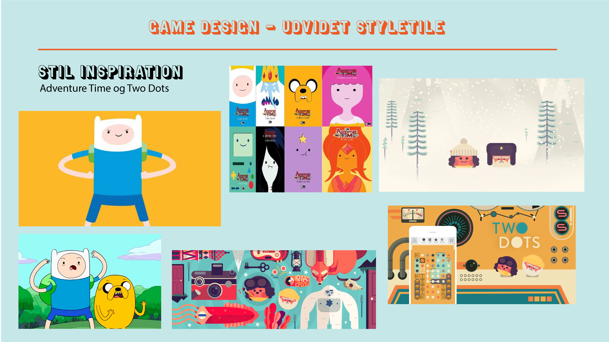
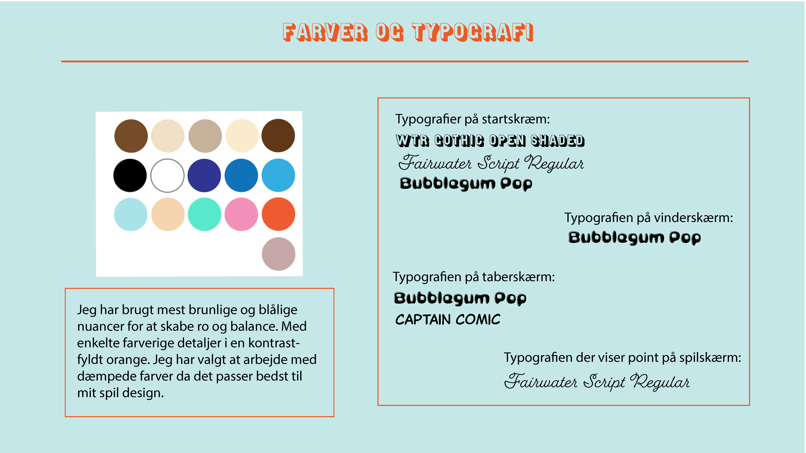

I animations temaet blev vi introduceret til den interaktive brugergrænseflad. Det handler om at skabe motivation for brugeren ved at skabe liv og interaktiv elementer som f.eks. animationer af knapper, lyde og bevægelser. Dette skulle vi lære gennem udviklingen af vores eget animationsspil. Her bliver vi introducret til javascript.
Vi skulle altså skabe et spil helt fra bunden og det skulle vi bl.a. gøre med de redskaber vi allerede havde fået i de tidligere temaer - vi skulle tegne og desgine vores figurer og elementer (de klikbare og de bevægelige) i illustrator og lave et statemachinediagram og aktivitetsdiagram for spillets struktur i google docs. Ligesom med de andre temaers idegenerering skulle vi selvfølgelig også lave skitser, research til inspitration og moodboard. Denne idégenering skulle munde ud i en assetliste som er en liste over alle de elementer der er i spillet. Alle disse metoder har jeg også anvendt i mit spil.

Jeg valgte at tage inspiration i flatdesign og tog mest af alt inspiratoion fra en tegneserie der hedder Adventure Time. Jeg valgte også at lave mit spil i de samme mættede farvetoner. Jeg holdt min spildesdign simpelt og roligt og valgte de runde bløde former for at skabe denne ro. Mit valg af typografi skulle ligeledes afspejle en ro, men også en tegneserie fornemmelse, og derfor valgte jeg netop de skrifttypernen 'WTR Gothic Spen Shaded', 'Fairwater Scripts Regular' og 'Bubblegum Pop'. Jeg brugte min styletile til at definere spillets udtryk og mine designvalg.
 Spillets struktur laves udfra ideen til spillet. Det vil sige at man skitsere og noterer hvordan spillet skal se ud, hvordan man spiller det og hvad det går ud på. Man skal altså visualisere de enkelte handlinger i spillet, og hver handlimg leder til en ny handling som man også skal have med. ALt dette gøres med et aktivitetsdiagram og et statemachinediagram. Aktivitetsdiagrammet er en overordnet 'handlings plan' for spillet, altså hvordan spiller man g hvad sker der. Et statemachinediagram er en detaljeret plan over hver enkel handling der kommer til at ske i spillet. Alle handlinger og muligheder er noget som vi skal kunne kode i javascript og derfor er det en god ide at have et statemachinediagram at gå ud fra.
I gruppeopgaven 'Billeddeling' blev vi stillet en opgave om at skabe et spil i et fiktivts samarbejde med Sex og Samfund og Privat Snak. Ideen bag var at skabe opmærksomhed omkring billedddeling i aldersgruppen 13-15 år, og hvilke retningslinjer der skal tages i sådanne situationer. Spillet ville tilsidst blive spillet af nogle folkeskoleelever til en fernisering.
Vi startede med at lave research om billeddeling, Sex og Samfund og Privat Snak. På den måde fik vi også indblik i hvad billeddeling var og hvordan det er bedst at formidle denne viden til vores målgruppe. Vi skulle finde og interviewe en teenager i aldersgruppen for vores målgruppe, og fandt en dreng på 14 år. Da vi havde arbejdet mere med stoffet viste vi vores skitser, vores spilelementer og vores spilidé. Ved dette interview fik vi en hel del brugbar information som vi kunne implementere i vores udvikling af spillet. F.eks. havde vi fået af vide at der skulle mere tempo på og at tiden var essentiel for at de var et sjovt spil. Derefter viste vi vores materiale til en pige og hun menete at de nøgne kroppe var for detaljeret og fiksede det til at passe bedre med målgruppen.
Noget nyt vi skulle arbejde med i dette tema var et 'burn down chart' som er en måde at visualisere ens opgaver bliver færre mens man når sit mål, det vil sige at man sætte punkt for det antal opgaver man har og hver dag skulle dette punkt gå ned og til sidst ramme nul. En anden metode vi brugte til at holde styr på vores projekt var at lave et 'trello board' som er en webside hvor man kan skabe et board for et projekt og skrive alle sine opgaver op og flytte dem efterhånden som de bliver færdige. Dette var utrolig hjælpsomt da vi var fire i gruppen og det ellers kunne være svært at holde styr på alle opgaverne. Derudover var jeg scrum master for min gruppe. Det vil sige at jeg var den der havde overblik og styrede vores 'morning scrum meeting' hvor vi briefede hvad der skulle ske den dag.